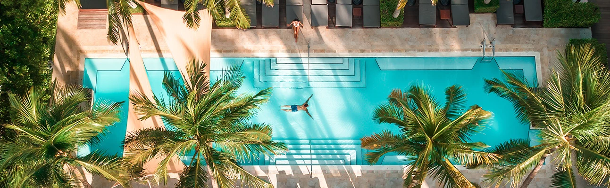
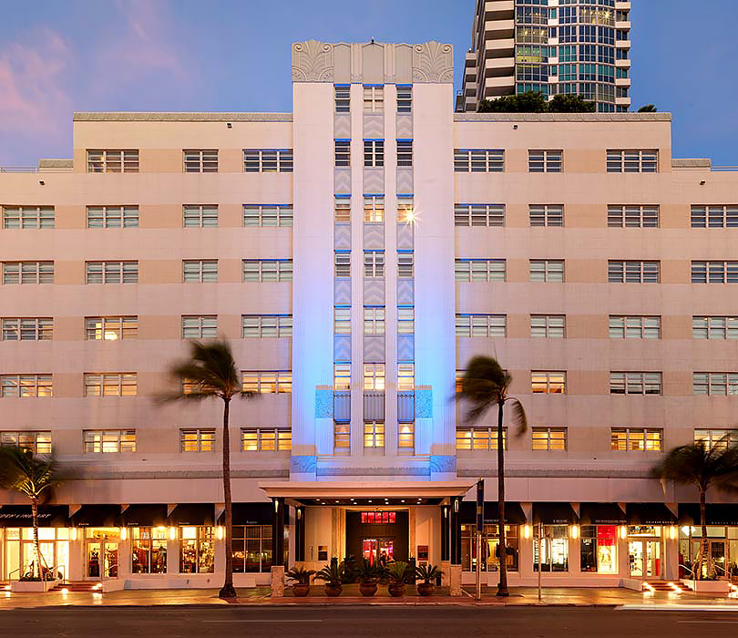
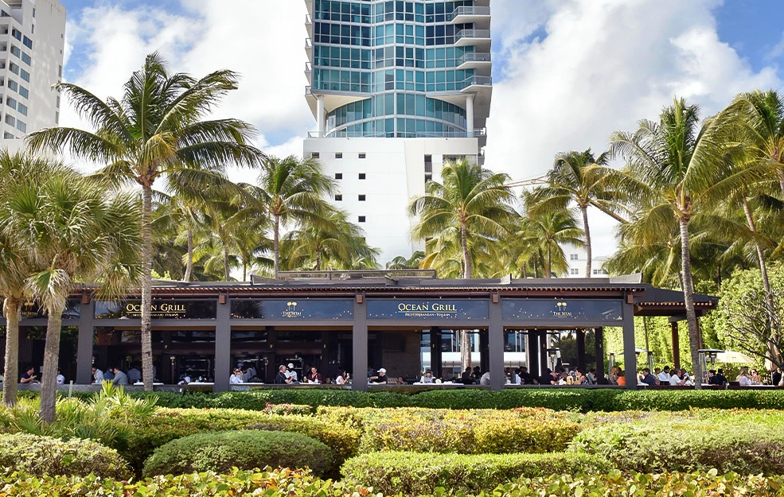
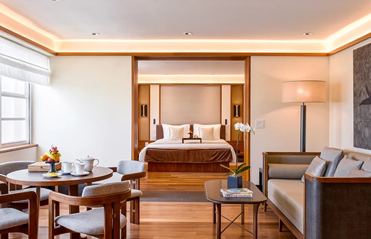
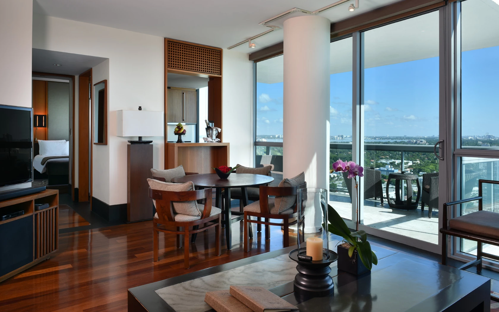
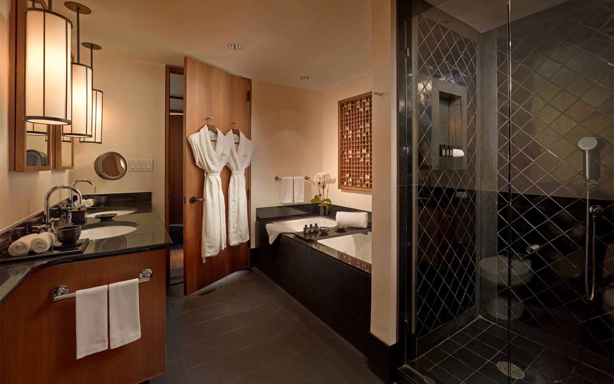

Favorite Hotels
The Setai is probably my favorite Miami stay for clients who want quiet luxury, serious service, and an Asian-inspired sense of calm right on South Beach.
The Setai is different from almost everything around it. It gives you South Beach location and oceanfront access, but the emotional feel of the property is far quieter, more refined, and more intentional than most Miami hotels. If the client wants understated luxury instead of performance, this is one of the best answers in the city.
What makes it unique
The Setai gives you South Beach without making you feel like you are living inside South Beach.
That is really the magic here. You still get the location, the beach, and the dining access, but the hotel itself stays calm, polished, and almost meditative in a way that is very hard to find in Miami.
Stay
Art Deco rooms plus Ocean Suites
The product splits between the landmark Art Deco building and larger, more dramatic ocean-facing suite inventory.
Dining
Strong and genuinely useful
Jaya, Japón, Ocean Grill, and the bars give the hotel excellent dining range without breaking the calm.
Best For
Quiet high-end Miami
Ideal for couples, privacy-minded luxury clients, and travelers who want South Beach without South Beach energy all day.
Known For
Jaya, the pools, and service
The Asian-inspired calm, three temperature-controlled pools, and discreet attention are the heart of the stay.



The overall setup
The Setai is built around two accommodation moods: the historic Art Deco side and the larger modern Ocean Suites. That matters because it lets me match the property to different client needs. Some people want the richer old-Miami, teak-and-stone atmosphere. Others want the wider ocean-facing suite product with bigger entertaining space and balconies.
Either way, the hotel feels intimate in tone. It never feels like a giant resort trying to overwhelm people.
Rooms, ocean suites, and top-end accommodations
The Art Deco suites start the story well, with rich teak wood, a calmer palette, and a more cocooned feel. Once you move into the Ocean Suites, the scale increases dramatically. Officially, the one-bedroom Ocean Suites run roughly 847 to 900 square feet, while the larger two-, three-, and four-bedroom configurations go far beyond that. The Grand Suite and Penthouse move into true residential territory.
That is a big reason I like The Setai for couples and certain families. It can start elegant and intimate, but it can also go very substantial if the client wants the stay to feel more residential.



Restaurants, bars, and the way the hotel actually lives
Officially, the key restaurant lineup is Jaya, Japón, and Ocean Grill, with the Lobby and Courtyard Bars supporting the rest of the rhythm. Jaya is still one of the biggest draws because it gives the hotel a real dinner identity. Ocean Grill handles the oceanfront daytime mode well, and Japón gives the hotel a more contemporary dinner layer.
What I like is that dining here still feels aligned with the hotel. Nothing pulls you out of the calmer tone of the property.
Pools, wellness, and service
The three temperature-controlled pools matter more than they sound like they should. They help the property hold a very steady rhythm through the day, and they are part of what makes The Setai feel composed instead of chaotic.
The service is a huge part of the story. This is one of the Miami hotels where the attention can feel discreet and almost invisible in the best way. The hotel is not trying to be loud about service, but the client feels it in the way everything moves more smoothly.
Who I would book it for
- Couples who want a serious luxury hotel on South Beach without party energy
- Travelers who value privacy, calm, and polished service
- Adults who want Miami to feel chic and restorative, not exhausting
- Certain families who prioritize suite quality and a more composed atmosphere
My honest take
The Setai is one of the easiest luxury recommendations in Miami when the client’s taste leans quieter and more refined. It is confident, elegant, and does not need to shout.